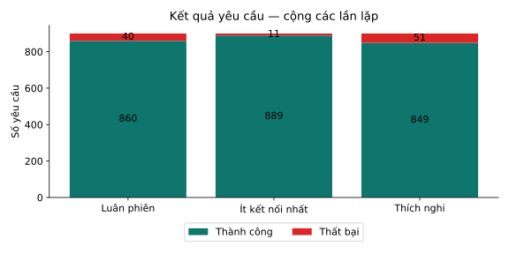
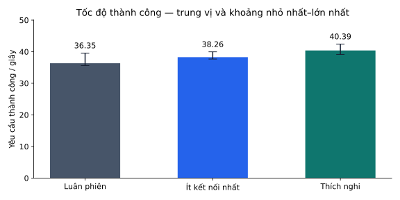
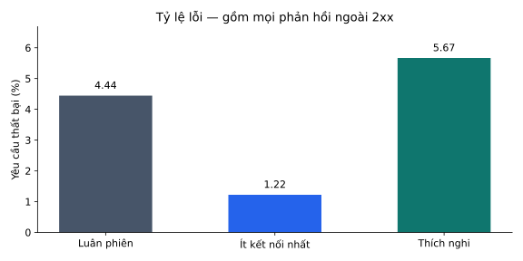
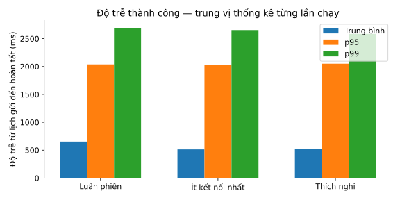
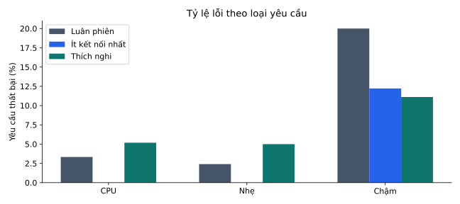
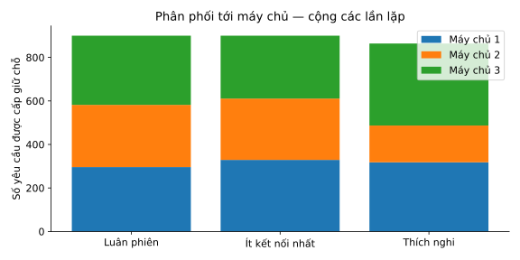

load-60 · Hỗn hợp
Thí nghiệm trên một máy; đọc khoảng dao động và từng loại yêu cầu trước khi kết luận.
Yêu cầu đo/lần: 300; làm nóng/lần: 100; tải gửi/giây: 60.0; số lần lặp: 3; hạt giống lịch gửi: 20260927; UTC: 2026-10-21T15:41:49.538264+00:00
Số lượng cộng các lần lặp. Tốc độ và độ trễ thành công là trung vị của thống kê từng lần chạy, không phải phân vị gộp. Độ trễ gồm trễ lịch gửi ở máy khách; giữ toàn bộ lỗi. Báo cáo không cập nhật trực tiếp.
| Thuật toán | Tổng | Thành công | Thất bại | Thành công/giây | Lỗi % | TB ms | p50 ms | p95 ms | p99 ms |
|---|---|---|---|---|---|---|---|---|---|
| Luân phiên | 900 | 860 | 40 | 36.35 | 4.44 | 653.79 | 309.72 | 2,038.19 | 2,692.02 |
| Ít kết nối nhất | 900 | 889 | 11 | 38.26 | 1.22 | 514.00 | 100.12 | 2,033.25 | 2,654.08 |
| Thích nghi | 900 | 849 | 51 | 40.39 | 5.67 | 520.10 | 172.13 | 2,050.76 | 2,584.86 |






| Thuật toán | Loại | Tổng | Thành công | Thất bại | Lỗi % | TB ms | p95 ms | p99 ms |
|---|---|---|---|---|---|---|---|---|
| Luân phiên | CPU | 270 | 261 | 9 | 3.33 | 530.38 | 1,783.44 | 2,267.58 |
| Luân phiên | Nhẹ | 540 | 527 | 13 | 2.41 | 524.50 | 1,714.93 | 2,257.22 |
| Luân phiên | Chậm | 90 | 72 | 18 | 20.00 | 2,196.77 | 2,801.87 | 2,921.74 |
| Ít kết nối nhất | CPU | 270 | 270 | 0 | 0.00 | 297.86 | 1,054.20 | 1,425.35 |
| Ít kết nối nhất | Nhẹ | 540 | 540 | 0 | 0.00 | 355.10 | 1,264.87 | 1,730.11 |
| Ít kết nối nhất | Chậm | 90 | 79 | 11 | 12.22 | 2,230.26 | 2,698.04 | 2,787.21 |
| Thích nghi | CPU | 270 | 256 | 14 | 5.19 | 305.79 | 1,003.36 | 1,029.66 |
| Thích nghi | Nhẹ | 540 | 513 | 27 | 5.00 | 335.99 | 846.06 | 1,336.76 |
| Thích nghi | Chậm | 90 | 80 | 10 | 11.11 | 2,267.67 | 2,604.79 | 2,785.10 |
| Thuật toán | Tốc độ nhỏ nhất–lớn nhất | p95 mọi kết quả (ms) | p95 trễ lịch gửi (ms) |
|---|---|---|---|
| Luân phiên | 35.60–39.56 | 2,411.09 | 15.95 |
| Ít kết nối nhất | 37.67–39.96 | 2,052.83 | 15.15 |
| Thích nghi | 39.12–42.43 | 2,050.76 | 14.85 |
Thống kê từng lần lặp: overall-summary.csv. Nguồn gốc và mã kiểm tra: bundle dữ liệu thí nghiệm. Có thể dùng SVG/PNG trực tiếp trong bài trình bày.